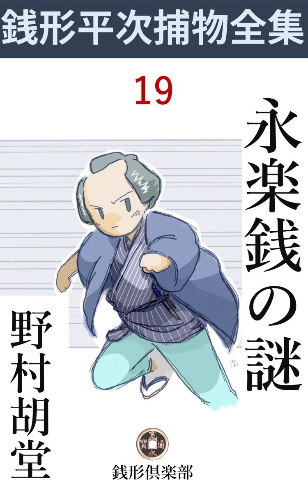
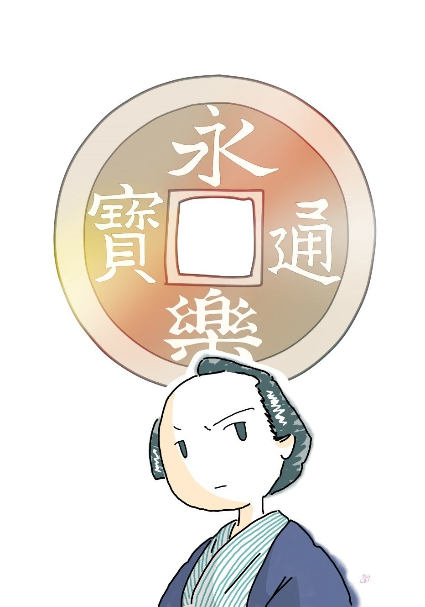

| 永楽銭の謎: 銭形平次捕物全集第19話 (銭形倶楽部) | |
| 野村胡堂 | |
| ZENIGATA CLUB (2018) | |

一
石原の利助が大怪我 をしたという噂を聞いた銭形の平次、何を差措 いても、その日のうちに見舞に行きました。
同じ十手捕縄を預かる仲間、昔は手柄を張合った気まずい仲でしたが、利助も取る年でいくらか気が挫 けた上、平次の潔白 な侠気 が、何より先に、娘のお品を動かして、今では身内のように附き合っている二人だったのです。
「兄哥、災難だったそうだね。一体、どうしたことなんだ」
案内されて、中へ通った平次、お品の勧 める座蒲団を押やって、利助の枕元に膝行 寄りました。
「平次兄哥か、わざわざ有難う。なアに、何でもありゃアしない、言わば、俺が間抜けなんだよ------」
妙に苦い口調で、利助は半面晒布 で包んだ顔をねじ向けました。
「眼をどうかしたって言うじゃないか」
「それがこうなんだ、------昨夜 、もう蚊 もいないし、涼しくて良い心持だから、縁側へ籠 枕 を出して、無精なようだが、ついウトウトとやると、いきなりパッと眼へ来たものがある」
「へエ」
「眼を開いていりゃア、間違いもなく眇目 にされたが、幸いつぶっていたから、眉 から瞼 へかけて恐ろしい傷だ。球も少しはやられたかも知れないが、白眼だから、傷になっても、見えなくなるような事はあるまいと外科は言うよ」
利助はそれでも、床の上へ起き直って、まだ腹立たしさが納 まらぬといった調子に、拳固 で自分の膝を叩いております。
「そいつは災難だったね、何が一体飛込んで来たんだ」
「銭だよ」
「えッ」
「一寸見は、棒で突いたようだが、後で見ると、縁の下に、肉 の厚 い永楽 銭 が一枚落ちていたんだ。こいつでやられたことは間違いのねえところだ」
「へエ------」
「余程腕の利く奴が、植込の中から、銭を投 りゃアがったんだよ」
「------」
「どんな怨 があるか知らないが、太い野郎じゃないか。捕まえたら、眼球でもくり抜いてやろうと思っている」
たった一つの眼を光らせて、一徹 な歯を食いしばる利助の気持を、平次はもとより察 しかねたわけではありません。
植込の外というと、三間近い距離から、縁側に転寝 している利助の眼を狙 って、これだけ効果的に銭を叩き付けられるのは江戸広しと雖 も、投げ銭の手練で有名な、銭形平次の外にある筈はありません。
商売敵の平次が、何か含 むところがあって、利助の眼を潰 そうとした------と聞いたら、江戸中の岡っ引は何と言うでしょう。弁解して信ずる人は信ずるでしょうが、当の利助さえ十二分の疑念を持っている位ですから、まず百人の九十九人までは、平次に不利益な疑いを抱くことは判り切っております。
「つまらない目に逢ったね、でも球 に障 りがなくて何よりだ。折角大事にしねえ」
平次はそう言うよりほかにありませんでした。お座なりと解り切っていても、これ以上物を言うことが、反 って利助の疑いを濃 くするだけだということが、商売柄、あまりにもよく解っているのです。
「ところで、銭形の」
「何だい、兄哥」
「少し頼みたいことがあるんだが、聞いてくれるだろうか」
利助は枕に頭を落して、妙に改 まったことを言い出します。
「それはもう、兄哥の言うことだもの、俺で出来ることなら何でもするよ」
「そいつは有難い。出来ない先からお礼を言って置くよ、------なアにたいしたことじゃないんだ。近頃知合から頼まれて、身柄 を引受けた、徳三郎という若い者がいるんだ、------おいお品、銭形のに引合せるから、徳の野郎がその辺にいるなら呼んでくれ」
二
間もなく、徳三郎という新顔の子分が、利助の枕元に呼出されて、銭形平次に引合されました。
「この野郎だよ。徳三郎といって、知合から頼まれたんだから、先ず俺の身寄 も同様だ。一と通り三道楽を舐 め廻した挙句 、何時までもやくざでは世の聞えも悪い、幸い人間は馬鹿じゃないようだから、行く行く十手捕縄をお預りするよう、一本立の御用聞に仕込んでくれ------とこういう話なんだ」
「------」
平次は黙って、徳三郎という男を見やりました。年の頃は二十五六、平次と幾つも違いませんが、謙遜 って、隅っこに丸く坐り、狭 い袷 で膝小僧を隠している様子は、いかにも人柄らしく見えます。
柄相応な藍微塵 の素袷 、掛 守 を少し覗 かせて、洗い髪の刷毛 先をチョイと左に外 らせた、色白の柔和な顔立ち、御用聞というよりは、大町人の手代か、芝居者といった風にも見えますが、兎に角、思慮も分別もフンダンにありそうで、少し半間なガラッ八とは、日当りの具合からして大分違いそうです。
「宜しい末長く面倒を見てやりましょうと引受たが、何分俺も取る年だ。もう十手捕縄を、お上へ返そうと思っている矢先でもあり、よしんば闇の礫 にしても外から物を投 られて、大事な眼 へ怪我をするようなことじゃ、子分の仕込みもむずかしい」
「そんな事が、兄哥」
「いや、銭形の、そう言ってくれるのは有難いが、石原の利助も、この辺が引込み時だろう。それに比 べると、銭形の兄哥は、今が日の出の勢いだ、------頼みと言うのは、この徳三郎を引受けて、俺に代って立派な御用聞に仕込んではくれまいか。万一眼識 に叶 えば、お品------出戻りの醜 い面 じゃ、たいして有難くもあるまいが、兎に角、お品と娶合 せるなり、それが厭なら、外から嫁を取って、俺の跡 を継 がしてもいい------」
利助の言うことは、本人を前にしては、少し立ち入り過ぎますが、しかし五十男の一刻 で、思い込むと加減も遠慮もなかったのでしょう。
「兄哥、そんな事なら、頼むも頼まれるもありゃアしない。どうせ碌な事は出来ないが、今日からでも、俺の家へ来て、仕事を手伝って貰おうじゃないか。兄哥も知っている八五郎は、柄にもなく身体を痛めて、田舎へ行っているし、神田の家には、遠慮するような者は一人もいねえ」
「それは有難い、早速言葉に甘えるようだが、荷物を纏 めて今晩にもやるから、何とか好い塩梅に引廻してやってくれ。何事も修業中だ、打っても叩いても文句は言わせないから、みっちり仕込んでくれ」
利助は言うだけ言うと、すっかり安心したものか、寝返りを打って、軽く目をつぶりました。
「それじゃ兄哥、大事にするがいいよ、俺は帰るから」
「済まなかったね、銭形の、碌 な茶も出さないで、------お品は一体何をしているんだろう」
平次は妙にそぐわない心持で外へ出ました。利助の疑念には、相当に根強いところがあるのも気になりますが、それより、秘蔵 弟子 ともいっていい徳三郎を、自分に託 する利助の心持が、どうしても解らなかったのです。
両国橋へ差かかると、後ろからバタバタと追いすがる草履 の音。
「親分、銭形の親分さん、ちょいと」
振返ると、利助の娘のお品が息を切って、追いすがって参ります。
「どうしたんだ、お品さん」
「親分、本当に済みません。父があの通りで」
「何を言うんだ、お品さん、橋の上なんかで泣いちゃ見っともない」
「植込の向うから銭を投って、眼を潰 そうとしたのは、銭形の親分に相違ないと思い込んでいるんです」
お品は人目も憚 らず、忙 しく袖口で涙を拭きながら、平次の耳へ囁 き加減にこう言います。
まだ、十分に若くも美しくもあるお品、後家 とも見えない艶 やかさが橋の上の人足を澱 ませて、平次をすっかりハラハラさせるのでした。
「銭形の親分は、決してそんな方じゃない。『狸囃子 』の時だって、この間の『富籤政談』の時だって、親分の潔白なお心持は解りそうなものじゃありませんか。いくら商売敵だかは知らないが、物を投って、人の眼を潰 そうなんて、そんな親分じゃありません------て言うと、お前は銭形のに------」
お品はハッと言葉を切って、赤い顔を俯向 けてしまいました。口の悪い利助が、「お前は銭形のに惚れているからだ」とか何とか言ったのでしょう。
「お品さん、あまり気を揉 んだものじゃないよ。解 る時が来れば、自然に解るだろうから」
「それが親分、容易に解りそうもありません。徳三郎をやるんだって、実は親分への目付役------」
「えッ」
「父さんはあんまり親分のお心持を知らなさ過ぎます。昨夜も徳三郎に銭形のところへ行って、よく見張っているがいい、俺の眼を潰そうとしたのは、あの野郎の仕業 に相違ない。証拠を掴 んだら、すぐここへ帰って来い、その日のうちにお品と祝言させて、俺の名跡 を継がせるから------ってこう言っていました、私は口惜 しくって、口惜しくって」
お品は到頭、シクシク泣き出してしまいました。夕づく陽を満面に浴びて、それは又何という不思議な見物だったでしょう。
「お品さん、それ位の事は俺も察した、------が、子が親の事をツケツケ言うものじゃない。善い悪いは別な話だ。黙って帰んなさるがいい」
「親分さん」
「解っているよ、お品さん。気が落着いたら遊びに来るがいい。お静も近頃は、お前さんの事ばかり噂しているよ」
「親分」
お品は平次の手で後ろへ向けられると、そのまま、袖に顔を埋めて、本所の方へ帰って行きました。
三
「ちょいと、良い幕ねえ」
「何？」
少しさびた、けれども潤 いのある艶 な声を浴びせられて、平次は思わず後ろを振り向きました。
橋の上には、夕陽の後光を後ろに背負 った、素晴らしい美女が地味なお召の袷 の褄 を軽くかかげて、平次の顔を迎えて、引入れるようにニッコリするのでした。
「お、お前 はお勢 」
「そうよ、富籤 の時は、すっかり親分のお世話になっちゃったわねえ」
毒婦丹頂 のお鶴の妹で、綱 吉 の妾 になり、海雲寺 の富籤で、一と役買って出たお勢。その後、お上の探索 の手を逸 れて、暫く姿を見せなかった、不思議な美女です。
「綱吉も、海雲寺の僧も何とかいう指物師 も御処刑 になったが、お前 はどこにいたんだ」
「悪い事をした者が御処刑になるに不思議はないでしょう。ねえ親分、そうじゃありませんか」
「お前は？」
「親分らしくない、私は何を悪い事をするものですか、イカサマ富の札を買ったのが悪きゃア、江戸中にやましい人間が何万人あるかわからない」
「何だと？」
「ホ、ホ、ホ、そんな間抜けな声を出すと、往来 の人が立って見るじゃありませんか。私は綱吉親分の世話になったのも本当だし、千両の当り札を持っていたのも本当だが、それが罪にでもなると言うのかえ、親分」
「------」
平次は全く二の句 が継げませんでした。この女の強 かさは、悉 く解っておりますが、獄門になった綱吉が、美色に溺 れて、この女の罪まで背負 って死んでしまったので、表向きからいえば、お勢に悪いところは少しもなかったのです。
「それより親分、石原の利助親分が、投げ銭で大怪我をしたって、世間では銭形の親分を疑っていますよ」
「何？」
「疑いというものは、先ずそうしたものさね。海雲寺の富籤 だって、当り札を綱吉から預かっていた私が悪いと言うなら兎も角、それ以上に立ち入って疑うのは、丁度、利助親分が、銭形の親分を疑うようなものじゃありませんか」
「------」
「左様なら、銭形の親分、又逢いましょうね」
お勢は身を躱 すと、柳橋の方へ、雲を踏 むようにユラユラと歩き出しました。
「待った！ お勢」
「私？」
「お前 は今どこにいる」
「囲 い者は懲々 しちゃったから、近頃は小唄の師匠よ」
「どこにいる」
「柳橋」
「ツイそこだな」
「遊びにいらっしゃいよ、親分」
平次は黙って、夕陽の中に立ちつくしました。柳橋で小唄の師匠をしているというのは、恐らく嘘ではないでしょう。それにしても、この女は、腑 に落ちない事だらけです。利助の怪我を知っている事も、自分の前へ平気な顔をさらした事も、からかい面の物の言い様も、あの抜群 の美しさも------。
四
それから四五日経ちました。
徳三郎は、思いの外素直な人間で、利助が付けた目付役らしくもなく、腹から平次に心服して、蔭日向 なく働くので、平次もすっかり気をよくしておりましたが------、
ある日の朝。
槙 町 に殺しがあると聞いて、縄張り内ではありませんが、様子を見に出かけようとしていると、八丁堀の与力、笹野新三郎のところから火急の用事があるから、取敢 えず来るようにという使 の者がありました。
出かけて行ったのは、もう巳刻 （十時）近い頃、新三郎は奉行所へも行かず、よほどの大事件と見えて、八丁堀の役宅に、平次の来るのを待っておりました。
「旦那、お早う御座います」
明るい縁側に、両手をついた平次。何の気もなく顔をあげると、笹野新三郎の、想像もつかぬ、むずかしい顔にハタと逢ってしまいました。
「平次、困ったことになったぞ」
「へエ------」
何が何だか、少しもわかりません。
「槙町に殺しがあったことは知っているだろうな」
「へエ、存じております。これから出掛けようとしていたところで」
「殺された者の名を聞いたか」
「いいえ」
「弥助という遊び人だ」
「へエ------」
「元は髪結 だったそうだな、お前も知っているだろう」
「へエ、よく存じております」
これは知らないとは言えません。髪結の弥助というやくざ者、腕っ節も男前も相当で、日本橋界隈 にはすっかり売込んでおりますが、一時、お静が両国の水茶屋にいた頃、それを張って、張って、張り抜いて、銭形の平次と鞘当 をやった男。忘れようのない相手だったのです。
「その弥助が殺された。二階で、月か何か見ているところを、庇 を渡って来た曲者 にやられたらしい。階下 にいる者は何にも知らなかったと言うから」
「へエ------下手人の当りが御座いましょうか」
「それが困った。傷は、左の眼を深く突かれた上に、額 を割られている。側には、肉の厚い永 楽 銭 が一枚落ちていたが、額の疵 とピタリと合う」
「えッ」
平次も驚きました。投げ銭の曲者の出現は、これが二度目です。石原の利助は幸いに助かりましたが、弥助が死んだとすると、これは成程話がむずかしくなりそうです。
「弥助の眼を突いたのは、銭 ではない、槍 かも知れない。どうかしたら匕首 かも知れない。兎に角、二階の手摺 にいたんだから、下の往来から突き上げたとすると、三間半もある長柄 か、物 干 竿 だ。大名行列じゃあるまいし、いくら夕暗でも、長柄の槍は持って歩ける筈はない。物干竿で眼を突かれるような、弥助でもあるまいし、どうかしたら矢かも知れないと思ったが、死ぬほど深く射込んだ矢なら、その辺にない筈もないだろう」

「------」
平次は黙って聞きました。この不可解な殺人が、自分の立場へ、どんな恐ろしい影響を持って来るかわかりませんが、予感めいたものに、背筋をゾッと寒気 が走ります。
「で、多分、庇 を渡って、隣から来て、弥助を殺して、ソッと隣へ帰ったものだろうということになったが、困ったことに、隣の空家の中から、平次------、お前の煙草入を拾ったものがある」
「あッ」
平次はこの時ほど驚いたことがありません。今朝出がけに、平時 使う煙草入がなかったので、お静に散々小言を言いながら、代りの煙草入を持って来たことは、あまりにも、マザマザと平次の記憶に蘇 って来るのです。
「弥助とお前は敵同士だ。それに投げ銭といい、煙草入といい、この下 手 人 は、平次に相違ないと、柴井町の友次郎も言い、石原の利助もいうが、どうだ」
ピタリと黒羽二重の膝の上に手を置いて、こう言い渡した笹野新三郎。年こそあまり違いませんが、貫禄も、威厳も、さすがに人を圧 して、平次の頭は自然に下がるばかりです。
「恐れ入りますが、旦那、それはお情けない。この平次の日頃の気性、人を殺す人間かどうか、誰よりも旦那がよく御承知でいらっしゃいます。どうか旦那」
平次の手は、何時の間にやら敷居 を掴んで、挙げた顔------、少し浅黒いが、江戸ッ児らしい、聰明な顔には、何やら涙さえ光っているのでした。
「平次、俺もそう思いたい。お前が人などを殺す筈がない。が、友次郎と利助の口が揃った上に、証拠があり過ぎる」
「旦那」
「役目の表から言えば、お前をここへ呼出して疑いの箇条 を聞かせるのが、もう手加減過ぎる位だ。吟味 与力 の役目は何のためだ」
「へエ------」
「この場でお前を縛って、伝馬町の牢同心に引渡すのが本当だが、そんな事をしたらお前の命は三日と保 つまい」
笹野新三郎の心配するのはそこでした。ハチ切れるようになっている伝馬町の大牢 へ、万一どんな間違いかで、岡っ引、御用聞が投 り込まれたら最後、三日と生きてはいられなかったのです。
娑婆 で縛られた囚人 共は、寄ってたかって、世にも恐ろしい方法で、入牢の岡っ引を、一寸だめし、五分試しに、いじめ殺してしまうのでした。
「旦那、有難う御座いました。友次郎は兎も角、利助兄哥 まで、この平次を下手人とするとは、何とした事で御座いましょう。宜しゅう御座います、今の今、本当の下手人を挙げるのはむずかしゅう御座いましょうが、せめてあっしの潔白だけでもお目にかけます。この上のお願い、どうか、槙 町の現場へ、お伴 さしちゃ下さいませんか」
折入っての頼み、平次の板の間に摺 り付けた額が、悲憤 の涙にさえ濡れているのを見ると、笹野新三郎は、一刀を提げて、黙って立上がりました。
「行こう、平次。そして、お前の潔白を見せて貰おう」
「有難う御座います、旦那。私の潔白をお目にかけられなかったら、その場で腹でも切って、せめて私の胸の中を、あの野郎共に見せてやります」
庭石の上へ滑 り落りると、庭木戸の蔭に、新米の徳三郎が心配そうに、二人の姿を見守っているのでした。
五
笹野新三郎が、平次をつれて、槙町の弥助の家へ行った時は、一応検屍 が済んだばかり、死体はその儘にして、多勢の中に、柴井町の友次郎、石原の利助などが、うさんな眼を光らせておりました。
友次郎も利助も、新三郎を迎えて、丁寧 に挨拶しましたが、平次の顔を見ると、フッとそっぽを向いてしまいます。
「平次、二階へ登って見よう」
「へエ」
「ここだよ、弥助の殺されたのは」
二階の浅い手摺 の下は、隣から続く板屋根で、その向うは、往来を隔 ててお濠 になっております。
「弥助の死体を見ても宜しゅう御座いましょうか」
「いいとも」
一応断った平次。二階の真ん中、北枕 に寝かした弥助の顔から、白い帛 を取って暫く見詰めておりましたが、
「旦那、この額 の疵 は、死んでから付いたもので御座いますね」
「何？」
妙なことを言い出します。
「眼を突く前に、投げ銭で額を割られたのなら、黒血が溜るとか流れるとかしなきゃアなりません」
「成程」
「ところが、弥助の額は、黒血も溜らず、腫 れもせず、それに、皮が破れているのに、血が出ていないのは、どうしたわけでしょう」
「フーム」
「これは、眼を突かれて打っ倒れるはずみに、ここにあった煙草盆で打ったので御座いますよ。傷あとは、よく見ると三角な溝 になっていますから、銭の跡でないことはわかります」
「------」
新三郎はもう口も利きません。引入れられるように、弥助の額口を覗いて、平次の言葉に点頭 くばかり、階段の登り口からは、 友次郎と利助、これは、悪意に充ちた眼を光らせながらも、呆気 に取られて、平次の言葉を聞いております。
「旦那、眼の疵 は、矢張り槍か何かで御座いましょう。少しえぐっておりますから、匕首 や箭 じゃ御座いません、------それにしてもたいした腕前ですね」
「槍とすると、相手は何だ」
「旦那が仰しゃったように、三間以上の長柄 というと、大名行列か、戦でもなきゃア持出しません。これは、もう少し考えさして下さいませんか」
「------」
「それから、この庇 は、まだ誰も歩きはしませんね」
「多分、誰もそこへ立入らせなかった筈だ。なア利助」
「へエ、旦那がお帰りになってから、隣の空家 は締切ってしまいましたし、この二階へも誰も上げはしません」
左の目の上に、膏薬 を貼り残した利助は、平次に顔を見られるのが眩 しそうに、俯向 き加減にこう言いました。
「すると、いよいよ私 は、腹を切るまでも御座いませんよ」
勝誇 った平次の声。
「どうした、平次」
「庇は、埃 と苔 で一パイ、猫の子が歩いても足跡が付きそうですし、それにこんなに腐 っていちゃ、どんなに身軽な人間でも、ここを渡って来られる道理はありません。煙草入と永楽 銭 の細工 は、私をどうかしようという企 みに決りました。それに、弥助が私を殺すなら理窟はわかりますが、お静を女房にした私が、何が不足で弥助なんかを殺すもんですか」
そう言いながら平次は手摺 から腹這 になって、庇 へ手を掛けて揺 ぶると、猛烈な埃をあげて、朽 ちた板が、ポコリと下に落ちてしまいました。
「よしよし、お前の疑いは、それで大体晴れたとして、あとは下手人を探しだすことだ。利助と友次郎に手を貸して一日も早く召捕るようにするのだぞ」
「へエ------」
「解ったか、平次」
眼に物言わせた新三郎、この二人の意地の悪い先輩 に楯 を突いて、又面倒な事を起してはならぬという謎でしょう。平次は妙に涙含 ましい心持にさえなって、
「へエ------」
蹲 まると、ありし日は、自分の恋敵であった弥助の死顔へ、片手拝みに白い帛 を掛けてやるのでした。
六
「親分、お目出とう」
「あッ、又お勢」
槙 町 で好い加減手間取って、夕暮近く鎌倉河岸の方へ来ると、後ろから近々と、平次の頬へ匂わせたのは、いつか両国橋で、平次を翻弄 した、小唄の師匠と名乗る美しいお勢でした。
「又------はないでしょう、折角、ここで待ってて上げたのに、ホ、ホ、ホ」
「有難う、思召しは忝 けないが、お前に逢うと碌 なことがない」
平次は、いつにない素 気 ない調子です。
「違やしませんか、親分、碌でもない事のあった日に限って私に逢うのでしょう」
「何？」
「ホ、ホ、天眼通でしょう。もう少しのところで、弥助殺しの下手人にされたんだもの。全く碌でもない事には違いない。だけど、巧 く言いのがれたわねえ」
「どこでそんな事を聞いた、お勢」
「まア、怖い。そんな顔をなさると、お静さんに嫌われますよ」
「------」
「柴井町の友次郎親分は、私の小唄の弟子だし、殺された弥助は昔からの知合だし」
「------」
「笹野の旦那だって満更他人 じゃないし」
「馬鹿ッ、お前は恐ろしい女だ」
「だけど、怖いのは私ばかりじゃないでしょう。親分の煙草入を盗んで、空家 へ抛 って置いたのは、誰だと思いなすって？ 騙 されたと思って、今晩帰ったら、お静さんを締め上げて御覧なさいよ、ホ、ホ、ホ」
「馬鹿ッ」
日頃穏和 な平次も、この時ほど怒ったことはありません。すっかり度を失って、ヨロヨロとお勢に近づくと、その袖をしっかり掴みましたが、
「何をするのさ、厭らしい。岡っ引なんかに口説 かれる私じゃないよ」
女は袂 を払って、サッと平手の目隠し、平次は僅かにそれを目の前で押えて、夕闇にすかして凝 と見ましたが、何を考えたか、
「ハッ、ハッ、ハッ、ハッ、いや雌 が吠 えるぞ」
カラカラと高笑い。
「何て奴だろう、気障 っちゃない」
お勢の罵 る声を背後 に、サッと引揚げてしまいました。
七
その晩平次が帰ったのは戌刻 過ぎ、珍らしく一合付けさして、陶然 としながら、こんな事を言いました。
「お静、お前のお蔭で、俺はひどい目に逢ったぞ」
「あら、何でしょう」
「何でしょう------じゃないぜ。俺の煙草入を仕舞い忘れて、どこかへ投り出して置くもんだから、もう少しで下 手 人 にされるところよ、少しはたしなめ」
「まア」
お静は何の事かわかりません。
「俺の煙草入が、人殺しの隣の家にあったんだ。今途中で逢った人がそう言ったよ。下手人が知りたかったら、女房を締め上げて訊いてみろって」
「まア」
この無邪気 な美しい顔、水茶屋奉公したとも思えない、初々 しいお静に、平次は何を聞くことがあるでしょう。
「まさか、恋女房を締め上げるわけにも行くまい。俺はこう見えても、ぞっこんお静に惚れているんだよ、ハッハッハッハッ」
モジモジする徳三郎を顧 みて、平次はその儘長火鉢の前に引くり返ってしまいました。間もなく軽い鼾 、お静は、掻巻 をそっと掛けていると、その儘お勝手へ立って、夕飯の跡 始末 をしております。
外は漆 のような宵闇 、小さい裸 燈 心 は、壁の上から、僅かに手元を照すだけ、時々、徳三郎が吐月峰 を叩く音だけが、妙に秋らしく冴 えて聞えます。
「あッ」
不意に、お静は悲鳴をあげました。
狸が真物 になって、ツイ、うとうととした平次、ガバと飛起きて行って見ると、お静は流し元に崩折れて、顳顬 を押えております。
「どうした、お静」
手を払って見ると、タラタラと流るる血潮、紅い糸を引いたように、ふくよかな顎 へ垂 れているではありませんか。
「どうした」
重ねて平次、お静の肩を揺 ぶるようにすると、夢心地のお静は、
「外から、------外から突かれました」
黒い瞳に、初めてサッと恐怖の色が浮びました。
「どんな野郎が突いたんです」
と、この時平次の後ろから、差覗いたのは徳三郎。
「何だかちっとも見えません、あんなに外は暗いんですもの」
お静は漸 く人心地付いたように、少し甘え加減に平次の顔を仰 ぎました。
「眼でなくて幸せだ、格子があるんで助かったんだ。畜生ッ、いよいよ俺に仇をするつもりだな」
平次は格子の外、庭口の闇を透 しましたが、そこにはもう何にも見えません。
「徳三郎、外へ出て見ろ」
「へエ------」
「曲者を追っ駆けても無駄だ、俺に少し考えがある。あの物 干 竿 を外 して、格子から一つ突っ込んで見るがいい」
「へエ------」
「あッ、跣足 で出る奴があるものか、曲者を追っかけるんじゃあるまいし」
「へエ------」
徳三郎は少しマゴマゴしながら、それでも、庭口の物干竿をおろすと、お勝手口まで持って来て、格子の外から、屁 ッピリ腰に構えました。
「無器用だなア、そんなこっちゃ人間は突けない。そうそう思い切りその竿 を突っ込んで見な」
「こうですか」
「あッ、到頭、格子 を突いてしまやがった。なんて構えだろう」
「親分、そう言ったって、あっしは槍は生れてから初めてですよ」
「まアいい、どうせ曲者のように器用には行くまい。あッ、竿をそんな場所へ置いちゃ泥が付くだろう、物干 へ返して置くんだ、そうそう」
そう言ううちにも平次は、手っ取り早くお静の傷口を洗って、用意の焼酎 でしめした上、手拭を裂 いてキリキリと結 えてやりました。
八
平次の活動は、それから三日ばかり続きました。どこをどう歩いたかわかりませんが、朝暗いうちから出かけて帰るのは大抵 夜更け、留守はお静と徳三郎と、お静の母親に頼んで、『万に一つも外へ顔を出すな、今度は命がないぞ------』とおどかして置きました。
四日目の夕方帰って来た平次は、ゲッソリ痩せて、眼の縁まで黒くしておりましたが、それでも恐ろしい元気で、久し振りで徳三郎を町の銭湯へ出すと、狭 い庭へ縁台を持出して、そこへ煙草盆まで取寄せました。
もう月見近い頃、涼みは時候 外 れですが、平次はそんな事を考えている様子もありません。
「風邪 を引きますよ、そんな吹き通しにいなすっちゃ」
と言うお静の母へは、
「いや、頭が冷えて何とも言えない、それに、今日は十八日だろう、こうしているうちにお月様が出るよ」
紺 の匂うような地味な袷 、黒っぽい帯をしめて、引っきりなしに煙草を詰めては、吐月峰 を叩いておりますが、成程、そうしておれば頭の芯 まで冷えるでしょうが、その代り、月の出には、まだ少し間がありそうです。
不意に、
「エッ」
と恐ろしい気合。
「曲者ッ、逃げるなッ」
平次の声が凜 と響きます。
「野郎ッ、逃がすものか、銭形の親分の一の子分、八五郎の腕っ節を知らないかッ」
外、抜け路地では、大変な組打が始まった様子。
「ガラッ八、逃がすな、今行くぞ」
植込を潜 って出た平次、上になり下になり争う人影を見定めて近づくと、
「ガラッ八、どっちだ」
「上だ」
「いや下だ」
「馬鹿野郎ッ」
声で見当がついたのでしょう。上へ馬乗りになったのを引起すと、叩き伏せて、手練の早縄、アッと言う間に縛り上げてしまいました。
そこへ飛出したのは、町内の弥次馬、行燈 、提灯。
「あッ、お前は徳三郎」
縄付の顔を見て一番驚いたのは、今までこの新米の子分を信じ切っていたお静と、お静の母親だったことは言うまでもありません。
翌る日、銭形平次は、笹野新三郎の前に、徳三郎を捕ったまでの経緯 を話さなければなりませんでした。
「利助兄哥を怪我さした時は判りませんでしたが、弥助を殺した時、これは、長物 だと気が付きました。長物もいろいろありますが、相手に気が付かずに眼を突くような手練は槍の名人でなきゃア、鳥刺 しの名人です」
「何？ 鳥刺し」
「左様で御座います。御鷹 の餌 を集める鳥刺しの中には、三間余りの竹竿 を持って行って、あんなにはしっこい小鳥を黐 で刺すのですから、並大抵の手練 じゃ御座いません。名人になると、三間竿を平手に持って歩くのが、往来の人に見えないために、鼻の先まで竿の端が行っても気が付かないそうです」
名人の鳥刺しの持つ竿は、竿に見えずに点に見えるというのは、誰でも知っている事です。
「そういう話もあるな」
新三郎もその説明には異論 がありません。
「して見ると利助兄哥を襲 ったのも、弥助を殺したのも、手前 女房を突いたのも、鳥刺の名人と睨みました。長柄 の槍は滅多 に持って歩かれず、又、槍の名人が手前の女房などを狙 う筈も御座いません。鳥 黐 竿 なら、折って畳込んで、五尺位になるのがあります」
「------」
「そう気が付くと、関八州の餌鳥取の鑑札を出す、小田原町の伊兵衛と、神田餌鳥屋敷の伝兵衛を訪ね、近頃、名人の餌刺 で、不首尾になったものはないか、商売換をしたものはないかと聞くと、たった一人御座いました。それは、年は若いが、伝三郎という鳥刺の名人で、御鷹役人を縮尻 って、やくざ者の仲間に入ったと申しますが、人相を聞くと、徳三郎そっくりで御座います」
「フーム」
「もうこれで、下手人は解ったも同様で御座います。あとは何のために私に、讐 をするか、それを解きさえすればいいわけで」
「------」
「何でも御座いません。徳三郎の情婦 は、丹頂のお鶴の妹のお勢だったので御座います。お勢にしては、この平次が憎くて憎くて仕様がありません。徳三郎の伝三郎をそそのかしてはいろいろ細工をしたのも無理のないことです」
「利助を突いたのはどう言うわけだ」
「富籤 の騒ぎの時、お勢はお品さんにひどい目に逢っております」
「弥助は？」
「あれは、お勢の昔の亭主でした。生かして置いては、伝三郎が納まらなかったのです」
平次の話には何の澱 みもありません。新三郎はすっかり謎を解いてしまいましたが、たった一つ、
「捕まえる時、庭へ縁台を出して釣ったのは、随分危ない仕事ではないか」
と訊くと、
「へエ、何としても確かな証拠がありませんので、千番に一番のつもりでやりました。もっとも漆 のような宵闇の中で、いつもの短い煙管でなく、長い朱 羅 宇 の煙管を横っちょへ脂下 りにくわえておりましたから、曲者は煙草の火へ見当を付けて、私の眼のつもりで、頬の横を突いて来たので御座います。塀の外にはガラッ八を伏せて置きましたから、眼球一つ位は潰 しても、間違いなく捕まえるつもりでした」
「お前は無法だ」
「それより危ないのは女房で御座いました。あの晩、お勝手の足跡で徳三郎が臭いと、すぐ気が付きましたが、念のために物干竿を持たして、恰好を見てやったのです。どんなに不器用に持っても、片手で不用意に提げた竿 は、物凄 いもので御座いましたよ」
平次の説明が済むと、次の間の障子を開けて、坊主頭の男が敷居に額を埋めております。
「誰だ」
と新三郎。
「利助で御座います。何とも面目 次第も御座いません、徳三郎を銭形の兄哥のところへやった上に、人殺しの疑いまでかけて。坊主になって参りました。銭形の、これで勘弁してくれ、十手捕縄は、この場でお返しして、明日から托鉢 でもして歩くから」
利助は少し涙ぐんで、もう一度敷居へ額を埋めました。
「冗談言っちゃいけない、石原の。鑑定 違いは誰にもあることだ。それに、徳三郎を臭いと思ったのも、お品さんの言葉があったからだよ、お前の手落なもんか。旦那の前だが今更十手捕縄をお返しする歳でもあるめえ。そんなつまらねえ事を言うものじゃないよ、ねえ旦那」
平次は利助と新三郎と双方 へ兼ねて物を言っております。
「------」
「有難い、銭形の」
利助はたまらずそこへ泣伏しました。
お勢はそれっきり行方知れず、ガラッ八はすっかり好い心持になって、
「銭形の親分には、矢張り俺が付いていなくちゃ」
と低い鼻を蠢 めかしております。
（編注）
作品中には、身体の障害や人権にかかわる、差別的な語句や表現が見られますが、本書が成立した当時の時代背景等が現代とは異なる古典的な文学作品でもあり、著者が故人でもありますので、底本のままとしました。ご理解、ご諒承のほどをお願い申し上げます。
著者---野村胡堂
挿絵---萩 柚月 © 2017
初出---「文藝春秋オール讀物號」昭和七年十月号
底本---「錢形平次捕物全集」第一巻 河出書房 昭和三十一年五月五日初版
編集・発行 銭形倶楽部